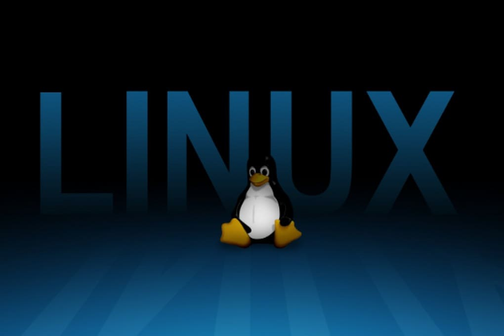

کالی لینوکس یک ابزار ضروری برای متخصصان امنیت سایبری است. با وجود مزایای بسیار، استفاده از آن نیازمند دانش فنی و تجربه در زمینه تست نفوذ است. این سیستمعامل به افرادی که به امنیت اطلاعات علاقه دارند کمک میکند تا مهارتهای خود را در محیطی قدرتمند توسعه دهند.
